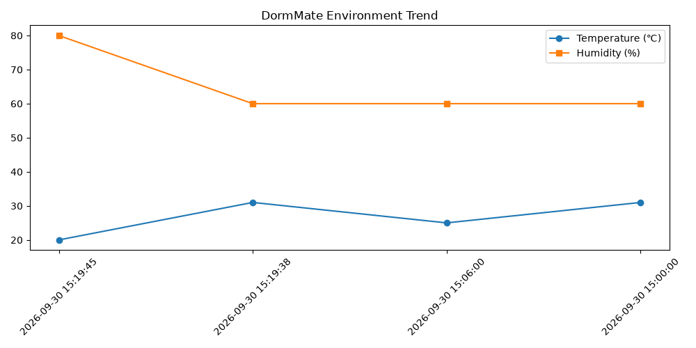

记录数: 4
温度最高: 31℃, 最低: 20℃
湿度最高: 80%, 最低: 60%
| 时间 | 温度 | 湿度 | 状态 | ML 判断 |
|---|---|---|---|---|
| 2026-09-30 15:19:45 | 20 | 80 | 偏湿 | 异常 |
| 2026-09-30 15:19:38 | 31 | 60 | 偏热 | 正常 |
| 2026-09-30 15:00:00 | 31 | 60 | 偏热 | 正常 |
模型: IsolationForest (n_estimators=100, contamination='auto', random_state=42)，特征: temperature + humidity
训练样本: 4 条，其中被模型标记为异常: 1 条
| 当前值 | 固定规则状态 | ML 判断 |
|---|---|---|
| 29℃ / 72% | 正常 | 正常 (predict=1) |
决策函数值: 0.0163（predict 返回 1 为正常、-1 为异常；score 越负越异常）
本次有 3 条记录两种判断不一致：20℃/80%（规则「偏湿」/ ML「异常」，该组合在 4 条样本中出现 1 次）；31℃/60%（规则「偏热」/ ML「正常」，该组合在 4 条样本中出现 2 次）；31℃/60%（规则「偏热」/ ML「正常」，该组合在 4 条样本中出现 2 次）。
这是方法定位不同，不是模型出错：固定规则是绝对阈值，只看单条数据本身是否越过 18℃ / 30℃ / 75% 这几条红线，与历史数据无关；IsolationForest 是相对离群度，判断的是这条数据在历史样本中是否罕见，与阈值无关。
上表中被规则判为「偏湿、偏热」的记录，其温湿度组合在训练集里已多次出现，在模型眼中属于常见状态，因此 ML 判为正常。两者结论独立，可以理解为：规则管红线，ML 管离群。
⚠️ 当前训练样本仅 4 条，模型能学到的分布有限，ML 结论的稳定性需要更多不同温湿度组合的样本支撑。
